Ecuații reciproce
Ecuații reciproce
Definiția P51: Polinom reciproc
Polinomul de gradul se numește polinom reciproc dacă între coeficienții săi există relațiile:
Exemple:
Polinoamele reciproce ![f\in K[X]](../../media/webbooks/338/2181/images/equations/zk2stqsavyr2wwk7aygfow==.gif) de gradul și
de gradul și  au formulele:
au formulele:
unde  și
și
Definiția P52: Ecuație reciprocă
Se numește ecuație algebrică reciprocă de gradul o ecuație de forma unde este un polinom reciproc de gradul 
Forma particulară a polinoamelor (ecuațiilor) reciproce de gradul  conduce la câteva observații generale:
conduce la câteva observații generale:
- Orice ecuație algebrică reciprocă de grad impar admite soluția
Într-adevăr, polinomul  se poate scrie sub forma și se obține
se poate scrie sub forma și se obține
- Prin împărțirea polinomului reciproc de grad impar la se obține un cât care este polinom reciproc de grad

- Dacă ecuația reciprocă are soluția
 , atunci are și soluția
, atunci are și soluția
În cele ce urmează îți vom prezenta rezolvarea ecuațiilor reciproce de gradul  și
și
Rezolvarea ecuației reciproce de gradul 3
Ecuația reciprocă de gradul cu coeficienți în corpul  are forma:
are forma:
Ecuația se poate scrie succesiv: sau .
Forma de scriere arată că ecuația are soluția și alte două soluții date de ecuația reciprocă de gradul
Exemplu:
Să se rezolve în ecuația
Rezolvare:
Scriem ecuația astfel:
![\begin{align*} &2x^2-5x^2-5x+2=0\\ &(x+1)[2x^2+(-5-2)x+2]=0\\ &(x+1)(2x^2-7x+2)=0 \end{align*}](../../media/webbooks/338/2181/images/equations/r7w6i5dwsczzmblc9en_bw==.gif)
De aici avem prima soluție
Pentru a afla celelalte două soluții, rezolvăm ecuația .

Ecuația dată are soluțiile și
Rezolvarea ecuației reciproce de gradul 4
Forma generală a ecuației reciproce de gradul cu coeficienții întregi este
Se observă că ecuația nu admite soluția
Algoritmul de rezolvare a ecuației reciproce de gradul
Pentru rezolvare se parcurg următorii pași:
Pasul : se împarte prin și se obține
Pasul  : se grupează termenii care au coeficienți egali:
: se grupează termenii care au coeficienți egali:
Pasul : se notează și rezultă că
Se obține ecuația de gradul  în sau numită ecuația rezolventă a ecuației reciproce de gradul
în sau numită ecuația rezolventă a ecuației reciproce de gradul
Pasul : se rezolvă ecuația rezolventă obținând soluțiile
Pasul : se rezolvă ecuațiile și  care se aduc la forma și
care se aduc la forma și
Rezultă astfel soluțiile ale ecuației reciproce.
Așadar, rezolvarea ecuației reciproce de gradul se reduce la rezolvarea a trei ecuații de gradul 
Exemplu:
Să se rezolve ecuația reciprocă
Rezolvare:
Conform algoritmului de rezolvare a ecuației reciproce de gradul avem următorii pași:
Pasul : Împărțim cu și obținem
Pasul : Grupăm termenii cu coeficienți egali, obținând:
Pasul 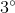: Facem notația și ne rezultă că de unde avem ecuația de gradul în
Pasul : Rezolvăm ecuația rezolventă
Pasul : Rezolvăm ecuațiile și care se aduc la forma și
Luăm pe rând cele două ecuații și le rezolvăm:
Am obținut primele soluții
Rezolvăm acuma cea de-a doua ecuație,

Putem obține acuma celelalte două rădăcini:
Am găsit soluțiile și 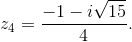
Observații:
- Dacă
![\begin{align*} f\in\mathbb{C}[X] \end{align*}](../../media/webbooks/338/2181/images/equations/zvokviyla0sfmp4umck7bq==.gif) este polinom reciproc de gradul număr impar, atunci rezolvarea ecuației reciproce de gradul
este polinom reciproc de gradul număr impar, atunci rezolvarea ecuației reciproce de gradul  se reduce la rezolvarea ecuației și a unei ecuații reciproce de gradul
se reduce la rezolvarea ecuației și a unei ecuații reciproce de gradul
Exemplu:
Să se rezolve ecuația
Rezolvare:
Observăm că este soluție a ecuației date. Ne rezultă prima soluție a ecuației date
Împărțim polinomului la polinomul

Obținem descompunerea
Rezultă ecuația
Avem o soluție, iar celelalte patru soluții sunt date de ecuația reciprocă 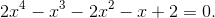
Rezolvăm ecuația reciprocă folosind algoritmul de rezolvare a unei ecuații reciproce de grad .
Facem notația și ne rezultă că de unde avem ecuația de gradul în  .
.
Rezolvăm ecuația rezolventă
Rezolvăm ecuațiile și care se aduc la forma și 
Luăm pe rând cele două ecuații și le rezolvăm:
Am obținut următoarele soluții
Rezolvăm acuma cea de-a doua ecuație,
Putem obține acuma celelalte două rădăcini:
Am găsit soluțiile și
- Dacă este un polinom reciproc de gradul adică este număr par, atunci rezolvarea ecuației reciproce atașate se poate reduce la rezolvarea unei ecuații de gradul
 cu necunoscuta 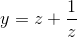 și a ecuații de gradul 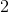 date de ecuațiile
cu necunoscuta 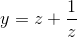 și a ecuații de gradul 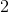 date de ecuațiile
Exemplu:
Să se rezolve în mulțimea  ecuația reciprocă de gradul 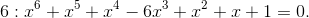
ecuația reciprocă de gradul 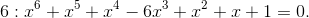
Rezolvare:
Împărțim ecuația reciprocă dată la și obținem:
Notăm acuma
Atunci avem:
și
Obținem astfel ecuația rezolventă de gradul  în
în
Avem o soluție Aflăm și celelalte două soluții, rezolvând ecuația de gradul doi
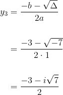
Am găsit soluțiile și
Se rezolvă acuma ecuația care se scrie echivalent unde 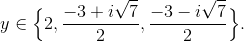